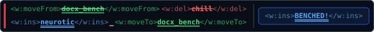
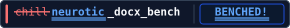

The eight badges offered to participating tools (options 1–8 in ISSUE_TEMPLATE.md). Every text span uses locked monospace advance widths (textLength) and generous container padding so strikethroughs, double underlines, moves, and pill borders align across platforms.
Compact two-row WordprocessingML: <w:moveFrom>, <w:del>, <w:ins>, <w:moveTo>.

[](https://jandira-tech.github.io/neurotic_docx_bench/)
Green strikethrough+underline move-from docx_bench, red strike chill, blue double-underline neurotic, green underline move-to docx_bench | bold blue double-underline BENCHED!.
[](https://jandira-tech.github.io/neurotic_docx_bench/)
Red strikethrough on chill, blue double-underline on neurotic, dark _docx_bench, and bold blue double-underline BENCHED!.
[](https://jandira-tech.github.io/neurotic_docx_bench/)
Double margin change bars, §, double red strikethrough on neurotic, and double green underline on benched!.
[](https://jandira-tech.github.io/neurotic_docx_bench/)
Green double-underline insertion variant of chill → neurotic_docx_bench | BENCHED!.
[](https://jandira-tech.github.io/neurotic_docx_bench/)
Dark canvas (#0f172a) with coral strike on chill and sky-blue double-underline insertion on neurotic.

[](https://jandira-tech.github.io/neurotic_docx_bench/)
Strikes out forgiving in red and inserts double-underlined blue neurotic.
[](https://jandira-tech.github.io/neurotic_docx_bench/)
Custom for docxodus in University of Michigan maize (#FFCB05) and blue (#00274C): docxodus in blue with maize double-underline insertion, BENCHED! on a maize field.
[](https://jandira-tech.github.io/neurotic_docx_bench/)